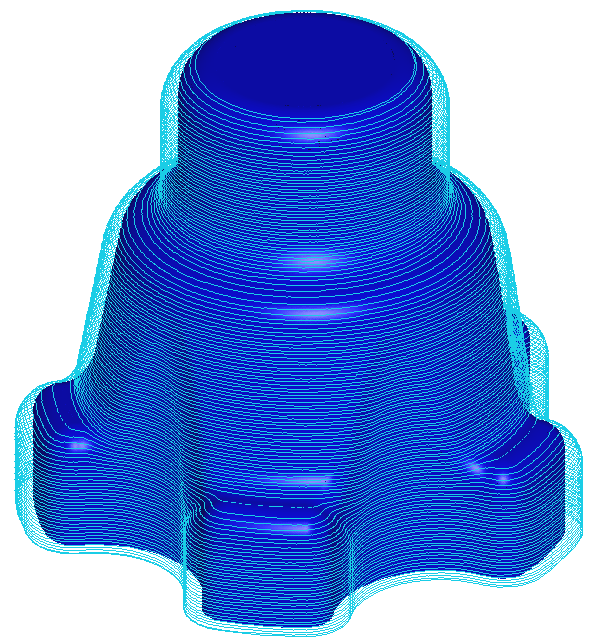
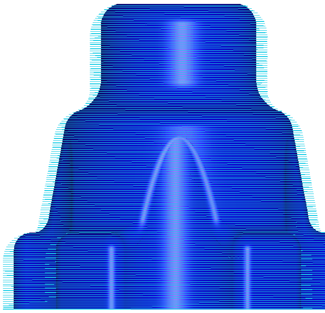
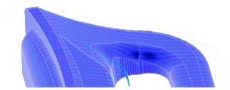
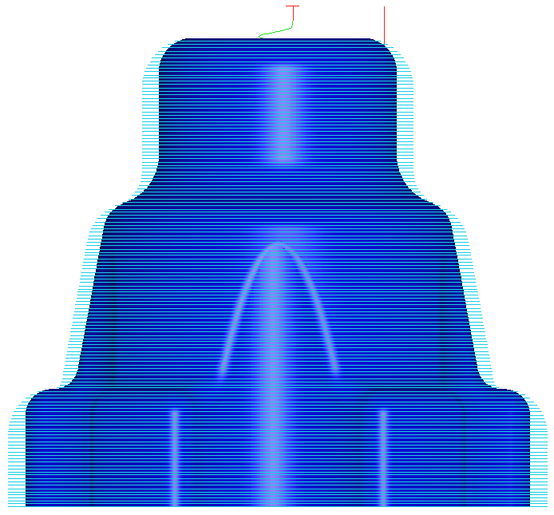

|
Helisel Takým Yolu:
3 boyutlu bir model üzerinde helisel bir takým yolu oluþturmak için yeni bir iþleme yöntemi geliþtirilmiþtir. Geleneksel eþ yükseltili iþlemeye benzer fakat pasolar arasý geçiþi daimi olan bir takým yolu oluþur. Kullanýcý aþaðý adýmlamayý hem mm cinsinden hem de açý deðeri cinsinden kontrol edebilmektedir. Her bir adýmlamada bir helis kolunun oluþmasý kesindir. Bununla birlikte kullanýcý açý deðerini düþürerek her adýmda birden fazla helis kolunun oluþmasýný saðlar.


Paralel / Eþ merkezli takým yolunda geliþmeler:
Paralel ve es merkezli pasolarýn belirli bir uzunlukta yüzeye teðet olarak uzatýlmasýný saðlayan ek bir parametre paso iþlemlerine eklenmiþtir.

Nazari Ýþlemlerdeki Geliþmeler:
Yeni sürümde nazari iþleme algoritmasý eklenmiþtir. Yeni algoritma sýnýr yaratýmýna gerek kalmayacak þekilde düzenlendiðinden artýk çok daha hýzlý, çok daha basit hale gelmiþtir. Ara iþleme sýnýrlarýný hesaplama süresi basitçe 1 saatten 2 dakikaya kadar indirilmiþtir. Dik ve sýð alanlar deðiþik iþleme yöntemleri ile ayný takým yolu içerisinde iþlenebilmektedir. Kesin olarak nazari iþlemeler geometrinin içerdiði kavis yarýçap deðerlerinden daha küçük yarýçaplý takýmlarla dahi uygulanabilmektedir. Örneðin 16x8 ebatlý bir takýmdan kalan bölgeler 6x3 ebatlý bir takým vasýtasýyla geometri kavis deðeri üçten büyük olsa dahi hesaplanabilir ve dik duvarlarda kademe kademe aþaðý inerek, sýð alanlar ise sarmal yöntemle iþlenebilmektedir. Bu kadar karmaþýk ve bütünleþik iþlemler, kýsa sürelerde büyük ebatlý parçalar üzerinde de uygulanabilmektedir.
Kalan iþleme yönteminde geliþmeler:
Nazari iþleme yönteminde temel dört geliþme vardýr:
- Yana kayma hesaplamalarý geliþtirilmiþtir. Bu sayede daha az hafýza kullanýmý, daha az iþleme pasosu, hýzlandýrýlmýþ hesaplama süresi ve daha küçük kod dosyasý ebatlarý saðlanmaktadýr.
- Hesaplama süresi geliþtirilmiþtir. Ýþleme yönteminin hesabýnda 3 kata kadar varan artýþ saðlanmýþtýr.
- Sarmal baðlama yöntemi geliþtirilmiþtir. Dar ve sýð alanlarýn baðlanmasýnda var olan doðrusal baðlama yöntemine ek olarak iki yeni deðiþken daha kullanýlmaktadýr.
- Dik / Sýð seçimlerinde geliþtirilmiþtir. Sadece dik veya sadece sýð alanlarýn iþlenmesi artýk olanaklýdýr.
Eþ yükseltili takým yolunda geliþmeler:
Pasolarýn baðlanmasý esnasýnda bir alttaki paso rampa hareketinin gerçekleþtirildiði kýsýmda budanýp atýlabilmektedir. Bu sayede daha kaliteli yüzeyler elde edilir. Yeni parametre eþ yükseltili pasolarýn baðlanmasý esnasýnda yöntem kýsmýnda yer almaktadýr. Ýþleme esnasýnda Machining STRATEGIST her zaman son 5 seviyeyi artýk talaþ kalýp kalmamasý hususunda kontrol eder ve eðer varsa ek paso yaratarak artýðý temizler. Bu sayede gereksiz yere çok küçük bir adýmlama gerçekleþtirilmemesi saðlanýr. Kullanýcýlar artýk bu son seviye ayarlama adedini kontrol edebilmektedir. Eþ yükseltili iþleme yönteminde, kaldýrýlana talaþýn miktarý ek olarak atanabilmektedir. Bu sayede parça üzerindeki adalarýn ayrý ayrý veya ayný anda iþlenip iþlenmeyeceði kullanýcý kontrolüne býrakýlmaktadýr.

|